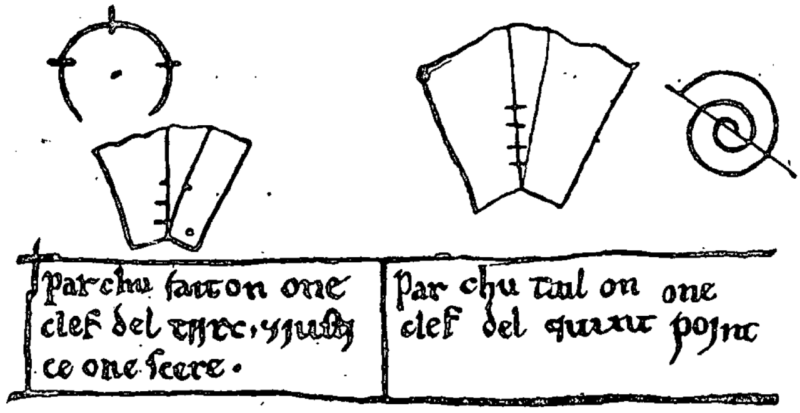
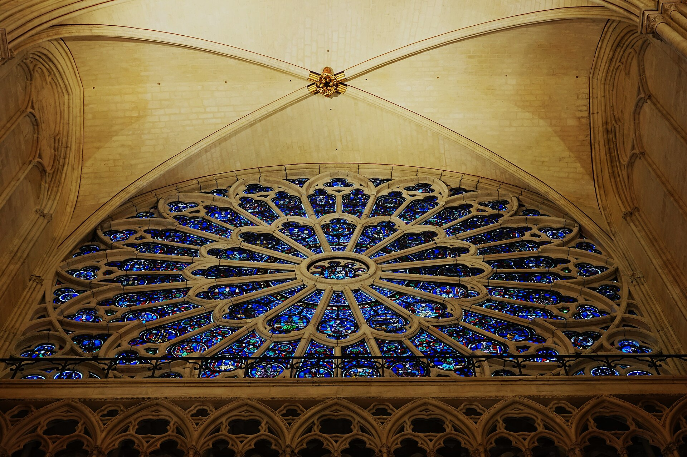
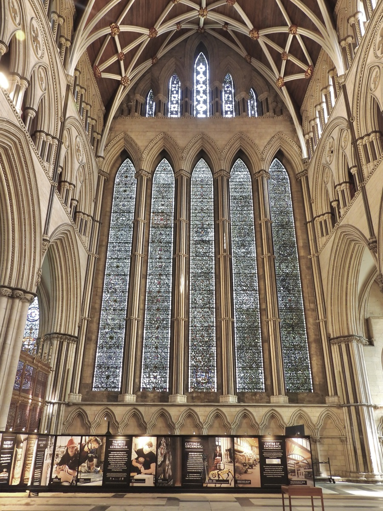

The Glass Rose
~11,120 after the ice, or 1120.
A circle appears, with its middle at 0 and its edge running through 1.
Drag an empty part of the table to move it about. Pinch to make it bigger. If you draw something you didn't want, tap an empty part and it goes.
That is the only thing this tool does. And for four hundred years it was how every coloured window in Europe got drawn.
The table
About nine hundred years ago a man who called himself Theophilus wrote down how to make things. Paint, and the brushes to paint with. How to cast a church bell. How to build an organ pipe. And how to make a window out of coloured glass, which was the newest and most expensive thing you could put in a wall.
He starts not with glass but with furniture. Take a flat board, he says, as wide as the window is going to be. Wet it, rub chalk into it until it is white all over, let it dry. Now you can draw on it with a sharpened piece of lead, and rub the drawing out, and draw again.
Then he has you draw the whole window on it, full size. Every piece. The glass is cut to the lines on the board, and when the window is finished the board is wiped clean and the next window is drawn on top.
Paper existed. Not in sheets a metre across, and not at a price anyone would pay. So the table was the paper — which means that of all the drawing done for all those windows, almost nothing is left.
What you can do
Theophilus had a compass, a straightedge, and no ruler with numbers on it. You have less than that: a compass, and no straightedge at all.
Here are all the rules there are. A circle is made from two locations you already have — touch one, drag to the other. Wherever two circles cross, a new location appears, marked with a copper dot, and you can use that one too.
You never put a location down. You find one, and then you build on it.
What the compass does by itself

Keep going. Put a circle on a new location, and another on the location that makes, and work your way round.
You come back to where you started. It takes six.
Not five, not seven. Nobody chose six and nothing was set to six. There is only one distance in the whole picture — the one between the first two locations — and six is what the table hands back. Most people who see it the first time do it again to check.
Look at the middle circle. The other six have cut it into six leaf shapes that meet at the centre and fill it exactly.

That shape is a rose, and the big round windows built out of it are called rose windows. You will find it in floor tiles too, and in a honeycomb, and in the ice on a cold window.
Why six and not some other number is a real question, and a deep one. It is on the open list.
Lead, then glass

Glass does not hold itself up. In a window every piece sits in a strip of lead, soft and grey, with a groove down each side for the glass to slide into. The dark lines in an old window are the lead. Theophilus wrote down how to cast it.
On his table the drawing was the plan for the lead, and the glass came afterwards. It works that way here too. Tap the two curves around one petal. Each tap lays lead along that curve, and when the second one closes the loop the petal fills with pale green.
That green is plain glass — sand melted with nothing added. Green is the colour glass is when nobody does anything to it, because there is a little iron in almost all sand and a little iron is enough. Getting the green out turned out to be harder than putting any colour in, and for a long time clear glass cost more than coloured.
A row of colours appears beside the glass. Tap a colour, then tap the piece. The blue comes from a pinch of cobalt in the pot, the red from a smaller pinch of gold, the yellow from silver. Theophilus did not know why any of that worked. Nobody did for another seven hundred years. But the pots were there, and the pinches, and he wrote down which pinch gave which colour.
This is your window
Make as many petals as you like, and colour them or leave them plain. Bigger circles reach further and cross in new places, and the new crossings are finer than the old ones.
When you want to see it without the drawing underneath, tap Just the glass.
Then tap Save, and choose. Save construction keeps it so you can open it again and watch how it was made. Postcard is for sending. Full sheet is big enough to print and put on a wall. New starts another one.
Afterwards
As far as anyone knows, none of the boards survive. Each one was wiped clean for the next window.
Some of the windows do survive. In Augsburg, in the south of Germany, five tall windows of prophets have been in the cathedral since around the time Theophilus was writing. Nobody knows exactly when they were made; the guesses run from the late 1000s to the early 1100s. They are among the oldest coloured windows still in the building they were made for.
About a hundred years after the book, the cathedral at Chartres, in France, was given three rose windows, each of them ten to twelve metres across.
Some of the drawing survives too. Around 1365, in York, in the north of England, the master masons who designed the stone frames of the windows drew them full size on a plaster floor in an upstairs room. Plaster does not wipe clean. The scratches are still there, circles over circles, each new design drawn on top of the last.
The second picture is somebody's patient tracing of what is in the first one.
The book itself was nearly lost. In 1774 a German writer named Gotthold Lessing, who was working as the librarian in the town of Wolfenbüttel, found one of the old copies on the library's shelves and printed parts of it. That copy is still in Wolfenbüttel. The other of the two oldest copies is in Vienna.
You can buy the book today in paperback. The whitewashed board is in the second part, chapter 17.
More
Your compass forgets. Theophilus's did not — a real pair of dividers stays open until you close them, and a glazier could carry one width around a window all day. The rule you worked under, that every circle has to be made from two locations already on the table, is Euclid's rule, and a compass like that is called a collapsing compass. The second thing Euclid ever proves is a way of carrying a distance from one place to another using nothing but circles that forget. He gave himself the harder tool and then showed it could do the job anyway.
Theophilus was probably a monk named Roger, who lived in what is now Germany and made things out of metal for a living. He wrote in Latin, and the book is called On Divers Arts. Nobody knows why he used a made-up name.
Join up the six outer crossings and you have a hexagon. Every one of its sides is exactly as long as the distance you started with, which is why six of them fit and no more. Euclid proved that. He also drew two crossing circles as the very first thing in his book, for a different reason, and that is a story too.
Cobalt is blue in glass because of the way its atoms hold their electrons. Why Cobalt Is Blue is the story, when you want it.
Not all the blue came from a pinch of cobalt. Theophilus says that in the ruins of ancient buildings you can find little squares of coloured glass from old mosaics, and that the French were especially good at melting them down to make blue glass for windows. So some of the blue in those windows was glass that had already been made hundreds of years before, melted and used again.
Theophilus’s World
References
Theophilus, On Divers Arts (De diversis artibus), about 1120. Book II is the glass book; chapter 17 is the whitewashed board. Translated by John G. Hawthorne and Cyril Stanley Smith, and in print cheaply.
The Masons' Loft tracing floor, York Minster — the University of York's archaeology pages, which carry the photographs and John Harvey's drawing of the lines.
Euclid, Elements, Book I proposition 1 (the two crossing circles) and Book IV proposition 15 (the hexagon). David Joyce's edition is online and free.
Georg Mohr, Euclides Danicus, 1672, and Lorenzo Mascheroni, La geometria del compasso, 1797 — the two proofs that the compass alone is enough.